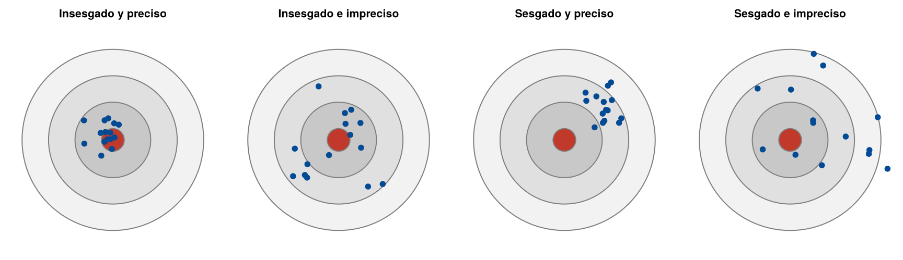
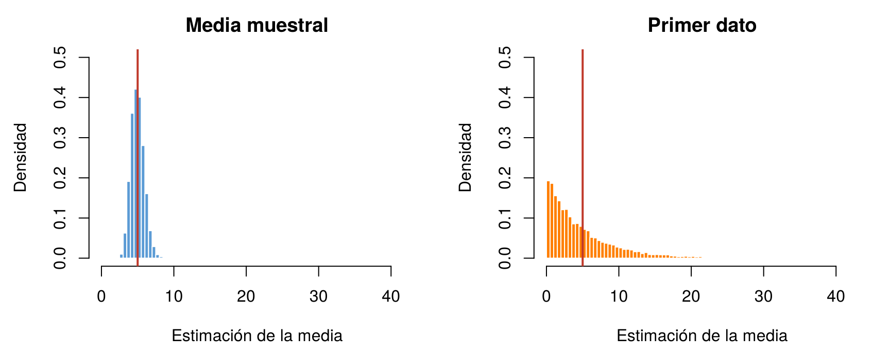

Para estimar un mismo parámetro se pueden usar fórmulas distintas. La media de una población se puede estimar con la media muestral, con la mediana o, en un extremo absurdo, con el primer dato de la muestra. La varianza se puede estimar dividiendo por \(n - 1\) o por \(n\). ¿Cómo decidir cuál es mejor?
Como cada estimador es una variable aleatoria, se juzga por su distribución muestral: dónde se ubica y qué tanto varía de una muestra a otra. Esta página presenta las propiedades que se usan para comparar estimadores: insesgadez, varianza, error cuadrático medio, consistencia y robustez. Los bloques de código se ejecutan en orden.
Una forma de pensarlo es como tiros a un blanco. El centro del blanco es el parámetro \(\theta\) y cada tiro es la estimación que da una muestra distinta.
| Poca dispersión | Mucha dispersión | |
|---|---|---|
| Centrado en \(\theta\) | Insesgado y preciso: el ideal | Insesgado pero impreciso |
| Desviado de \(\theta\) | Sesgado pero preciso | Sesgado e impreciso |
set.seed(2026)
par(mfrow = c(1, 4), mar = c(0.5, 0.5, 2, 0.5))
casos <- list(c(0, 0, 0.15), c(0, 0, 0.5), c(0.55, 0.4, 0.15), c(0.55, 0.4, 0.5))
titulos <- c("Insesgado y preciso", "Insesgado e impreciso", "Sesgado y preciso", "Sesgado e impreciso")
for (k in 1:4) {
plot(0, 0, type = "n", xlim = c(-1.3, 1.3), ylim = c(-1.3, 1.3), asp = 1, axes = FALSE,
xlab = "", ylab = "", main = titulos[k], cex.main = 1)
symbols(rep(0, 4), rep(0, 4), circles = c(1.2, 0.85, 0.5, 0.15), inches = FALSE, add = TRUE,
bg = c("#F2F2F2", "#E0E0E0", "#C8C8C8", "#C0392B"), fg = "gray50")
points(casos[[k]][1] + rnorm(15, 0, casos[[k]][3]), casos[[k]][2] + rnorm(15, 0, casos[[k]][3]),
pch = 19, col = "#034A94")
}
Cuatro estimadores representados como tiros a un blanco. El centro es el parámetro.
El sesgo de un estimador es la diferencia entre su valor esperado y el parámetro:
\[ \text{Sesgo}(\hat{\theta}) = E(\hat{\theta}) - \theta \]
Un estimador es insesgado si su sesgo es cero, es decir, si en promedio, sobre todas las muestras posibles, acierta: \(E(\hat{\theta}) = \theta\). No significa que acierte en cada muestra.
Algunos ejemplos:
Dos estimadores pueden ser insesgados y tener dispersiones muy distintas. Entre dos estimadores insesgados, se prefiere el de menor varianza, y se dice que es más eficiente: sus estimaciones quedan, en general, más cerca del parámetro.
Por ejemplo, para la media de la población, tanto la media muestral \(\bar{X}\) como el primer dato de la muestra, \(X_1\), son insesgados: \(E(X_1) = \mu\). Pero sus varianzas son muy distintas:
\[ \text{Var}(\bar{X}) = \frac{\sigma^2}{n}, \qquad \text{Var}(X_1) = \sigma^2 \]
La media muestral usa la información de todos los datos y por eso es mucho más eficiente.
Para comparar estimadores que pueden ser sesgados, se usa el error cuadrático medio (ECM): el promedio del cuadrado de la distancia entre el estimador y el parámetro. Se puede escribir como la suma de la varianza y el sesgo al cuadrado:
\[ \text{ECM}(\hat{\theta}) = E\big[(\hat{\theta} - \theta)^2\big] = \text{Var}(\hat{\theta}) + \text{Sesgo}(\hat{\theta})^2 \]
Un estimador con un sesgo pequeño y una varianza mucho menor puede tener menor ECM que uno insesgado. Si el estimador es insesgado, su ECM es igual a su varianza.
Un estimador es consistente si, al aumentar el tamaño de la muestra, sus estimaciones se concentran cada vez más alrededor del parámetro. Una forma práctica de comprobarlo es ver que su ECM se acerca a cero cuando \(n\) crece: eso ocurre si el sesgo y la varianza se acercan a cero.
Con la población de las llamadas, exponencial con media \(\mu = 5\) y varianza \(\sigma^2 = 25\), se comparan cuatro estimadores:
Se toman 10 000 muestras de cada tamaño, se aplica cada estimador y
se calculan el promedio de las estimaciones, su varianza y su ECM. La
función comparar() hace todo para un tamaño \(n\):
comparar <- function(n, B = 10000) {
est <- replicate(B, {
x <- rexp(n, rate = 1/5)
c(media = mean(x), primero = x[1], S2 = var(x), sigma2_n = var(x) * (n - 1) / n)
})
verdadero <- c(5, 5, 25, 25)
promedio <- rowMeans(est)
varianza <- apply(est, 1, var)
round(rbind(promedio = promedio, sesgo = promedio - verdadero,
varianza = varianza, ECM = varianza + (promedio - verdadero)^2), 3)
}
set.seed(2026)
comparar(5) media primero S2 sigma2_n
promedio 5.005 4.996 25.016 20.013
sesgo 0.005 -0.004 0.016 -4.987
varianza 5.063 25.428 959.095 613.821
ECM 5.063 25.428 959.095 638.691comparar(100) media primero S2 sigma2_n
promedio 4.994 4.932 24.951 24.701
sesgo -0.006 -0.068 -0.049 -0.299
varianza 0.256 24.414 49.945 48.951
ECM 0.256 24.418 49.947 49.040Los resultados muestran las cuatro propiedades:
set.seed(2026)
est_30 <- replicate(10000, { x <- rexp(30, rate = 1/5); c(mean(x), x[1]) })
cortes <- seq(0, ceiling(max(est_30)) + 1, by = 0.5) # las mismas barras para los dos histogramas
par(mfrow = c(1, 2), mar = c(4.5, 4.5, 2.5, 1))
hist(est_30[1, ], breaks = cortes, freq = FALSE, col = "#5B9BD5", border = "white", xlim = range(cortes), ylim = c(0, 0.5),
main = "Media muestral", xlab = "Estimación de la media", ylab = "Densidad")
abline(v = 5, col = "#C0392B", lwd = 2)
hist(est_30[2, ], breaks = cortes, freq = FALSE, col = "#FF7F00", border = "white", xlim = range(cortes), ylim = c(0, 0.5),
main = "Primer dato", xlab = "Estimación de la media", ylab = "Densidad")
abline(v = 5, col = "#C0392B", lwd = 2)
Distribución de 10 000 estimaciones de la media con la media muestral y con el primer dato, para muestras de 30 llamadas. La línea roja es la media de la población, 5.
Un estimador es robusto si no cambia mucho cuando la muestra tiene unos pocos valores extremos o errores de digitación.
Por ejemplo, se registran los tiempos de entrega (en minutos) de 10 domicilios. El último dato se digitó mal: debía ser 12 y quedó como 120.
tiempos <- c(12, 15, 14, 13, 16, 15, 14, 13, 15, 120)
mean(tiempos)[1] 24.7median(tiempos)[1] 14.5Un solo dato erróneo lleva la media de alrededor de 14 a 24.7 minutos, mientras que la mediana queda en 14.5. La mediana es robusta y la media no. Por eso, antes de estimar, conviene graficar los datos y revisar los valores extremos.
| Propiedad | Pregunta que responde | Cómo se revisa |
|---|---|---|
| Insesgadez | ¿Acierta en promedio? | \(E(\hat{\theta}) = \theta\) |
| Eficiencia | Entre los insesgados, ¿cuál varía menos? | Comparar varianzas |
| Error cuadrático medio | ¿Qué tan lejos queda, en promedio, del parámetro? | Varianza + sesgo² |
| Consistencia | ¿Mejora al aumentar la muestra? | El ECM se acerca a 0 cuando \(n\) crece |
| Robustez | ¿Resiste valores extremos? | Ver cuánto cambia con un dato atípico |
Ninguna propiedad basta por sí sola: \(X_1\) es insesgado pero inútil, y un estimador con un sesgo pequeño puede ser mejor que uno insesgado. El ECM resume el sesgo y la varianza en un solo número, y por eso es el criterio más usado para comparar.
| Problema | Causa | Solución |
|---|---|---|
| Creer que un estimador insesgado acierta en cada muestra | Se confunde “en promedio” con “siempre” | El sesgo cero habla del promedio sobre muchas muestras |
| Elegir siempre el estimador insesgado | Se ignoró la varianza | Comparar con el error cuadrático medio |
| Llamar “eficiente” a cualquier estimador de menor varianza | La eficiencia compara estimadores insesgados | Para estimadores sesgados, usar el ECM |
| Juzgar la consistencia con el coeficiente de variación | El CV no mide la distancia al parámetro | Revisar que el sesgo y la varianza se acerquen a cero |
| Confundir un estimador sesgado con una distribución asimétrica | Son ideas distintas | El sesgo compara el centro del estimador con el parámetro |
Si una población tiene varianza \(\sigma^2 = 36\), ¿cuál es el valor esperado de \(\hat{\sigma}^2\) con \(n = 4\)? ¿Y con \(n = 100\)? ¿Qué pasa con el sesgo cuando \(n\) crece?
\(E(\hat{\sigma}^2) = \frac{n - 1}{n}\,\sigma^2\): con \(n = 4\) es \(\frac{3}{4} \times 36 = 27\) (sesgo de −9), y con \(n = 100\) es \(0.99 \times 36 = 35.64\) (sesgo de −0.36). El sesgo se acerca a cero cuando \(n\) crece.
Un estudiante propone estimar la media con el promedio del valor más pequeño y el más grande de la muestra, \((\min + \max)/2\). Compárelo con \(\bar{X}\) en muestras de 20 llamadas (población exponencial con media 5). ¿Es insesgado? ¿Cuál tiene menor ECM?
set.seed(2026)
est_r2 <- replicate(10000, { x <- rexp(20, rate = 1/5); c(media = mean(x), extremos = (min(x) + max(x)) / 2) })
rowMeans(est_r2) # promedio de las estimaciones media extremos
4.998800 9.125917 apply(est_r2, 1, var) + (rowMeans(est_r2) - 5)^2 # ECM media extremos
1.266321 27.137725 El promedio de los extremos está sesgado hacia arriba, porque en la exponencial el máximo puede ser muy grande, y su ECM es mucho mayor que el de \(\bar{X}\).
Simule 10 000 muestras de tamaño 25 de una población normal con media 10 y desviación estándar 2. Compare la varianza de la media muestral y la de la mediana muestral. ¿Cuál es más eficiente cuando no hay valores extremos?
set.seed(2026)
est_r3 <- replicate(10000, { x <- rnorm(25, 10, 2); c(media = mean(x), mediana = median(x)) })
rowMeans(est_r3) media mediana
10.00438 10.00105 apply(est_r3, 1, var) media mediana
0.1605302 0.2468709 Las dos son insesgadas para la media, porque la normal es simétrica, pero la varianza de la mediana es cerca de 1.5 veces la de la media. Sin valores extremos, la media es más eficiente; con valores extremos, la mediana es más robusta.
Última revisión: 7 de noviembre de 2026.